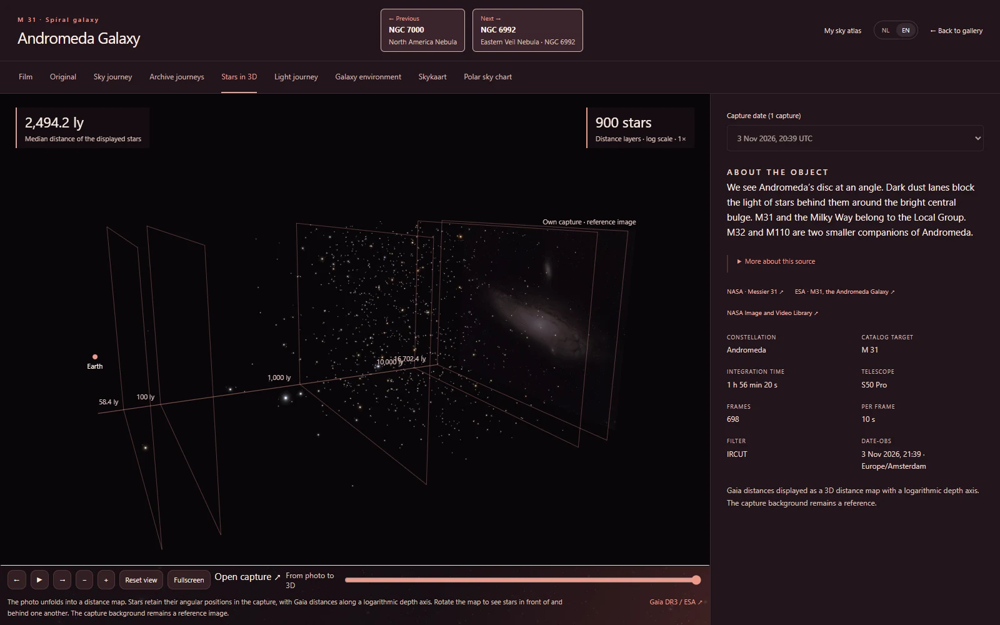
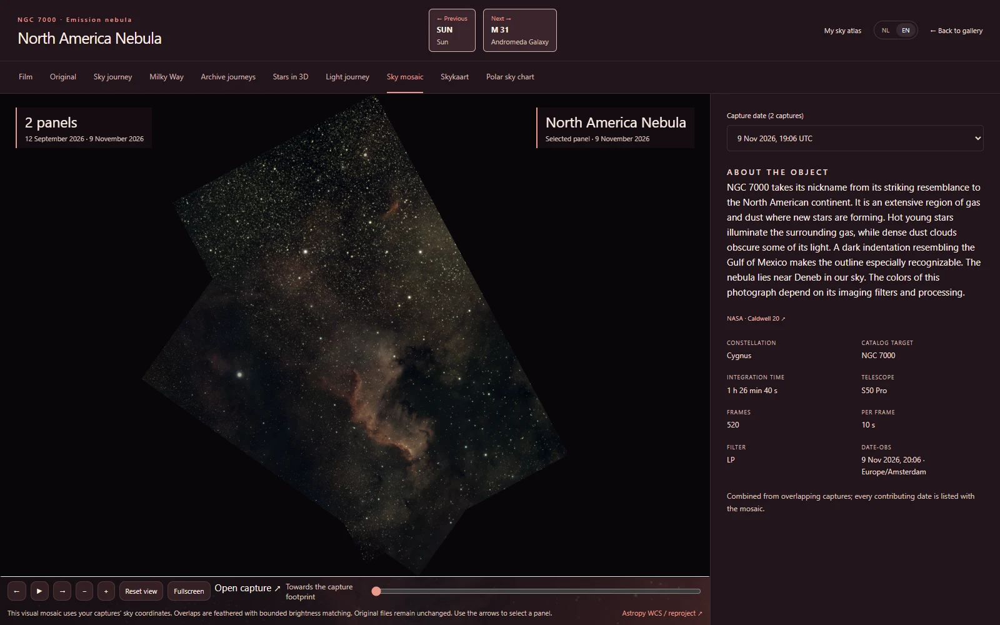

Stars in 3D
Unfold your photograph into a rotatable distance diagram. Up to 900 stars are cropped from your own image and linked to reliable Gaia DR3 parallaxes. Select a star to inspect its distance and uncertainty.
The depth axis is logarithmic. The photograph remains a reference plane; this is a distance diagram, not a reconstructed nebula.

The light journey
Follow a light pulse from the object to Earth, with total and remaining travel time. Your photograph appears on arrival. Nearby catalogue distances take priority; other galaxies can use a sourced redshift, NED and Astropy Planck18.
The route is schematic. Lookback time and different cosmological distances are labelled separately.

Your overlapping sky
Two or more overlapping registered captures reveal a Sky mosaic tab. Pan, zoom and tour the combined field, select a panel and return to its original. All contributing dates remain visible.
Reproject, feathering and bounded brightness matching create a visual mosaic. Your originals stay unchanged.

The same Sun
Solar captures gain a dedicated comparison with SDO/HMI continuum and AIA 171 Å near the actual capture time. Inspect the observation offset and a SunPy grid; track a selected surface coordinate using a rotation model.
Your photo orientation is manually adjustable. The separate eclipse detail journey now aligns the detected solar limb throughout its dissolve.
What am I seeing?
Open the tab next to Original and select a marker on your photograph. Step through the features, zoom in or use the selected feature as a named zoom target in Studio. Deep-sky labels use the registered view of the sky. Lunar landmarks appear after the photograph has been aligned to a reference for the capture time. For partial phases AstroWeb fits the illuminated outer limb and checks the surface match using independent features.
Mark a planet’s visible features
For a Solar System capture, sign in and choose Add marker to point out a detail such as Saturn’s rings or Jupiter’s Great Red Spot. Use a preset or your own name. Markers belong to individual captures and appear under Explore on Google TV. Some markers link to a detail journey.
Find more features in your field
The guide adds bright Hipparcos stars and looks for SIMBAD objects inside your measured field of view. When a named feature has a matching Hubble image, AstroWeb checks the full image coverage and the exposed detector before adding a detail journey.
From Merope to IC 349
Pick Merope in the Pleiades guide to fly into its neighbouring reflection nebula. AstroWeb aligns the published Hubble colour frame with a calibrated WFPC2 observation. NASA’s IC 349 image and credits
From your Moon photo to the surface
Open Detail journeys on a lunar capture to visit Apollo 11, 12 or 14, the Tycho, Copernicus, Plato, Aristarchus and Clavius craters, or the seas Tranquillitatis and Imbrium. AstroWeb aligns surface landmarks with a NASA reference for the capture date and gradually brings in sharper lunar imagery as you zoom. After the first film is ready, the server prepares journeys to visible, sunlit sites in the background. Finished journeys can play immediately while another destination is rendering.
The source mosaics were taken under different lighting. Narrow-angle LRO imagery adds detail at the Apollo sites. Lunar imagery and coordinates
Sky mosaics recover after Gaia outages
AstroWeb tries the official ESA archive if the AIP Gaia service is unavailable. Temporary failures retry in the background, starting after a minute and spacing out to six hours. The Sky mosaic tab appears when at least two overlapping captures are registered.
The TV app reads the same destinations and mosaics from the server.
Small planetary captures
Studio can prepare a 256-pixel viewing and rendering copy for small Solar System images. Download original returns your source image. For ASIStudio planetary stacks, AstroWeb reads a timestamp such as 2026-11-20-180949 from the filename in the Europe/Amsterdam time zone and keeps the original FITS header. You can enter a time in Studio when the filename provides no unambiguous one.
From Saturn to its rings
Open What am I seeing? to find a Rings marker when AstroWeb can measure the visible wings of the ring system. Select Watch detail journey to follow the measured ring direction into a Cassini overview. An existing manual marker takes priority.
The Cassini Division journey adds a close-up from another angle. A separate journey visits the icy plumes of Enceladus. Watch the Saturn example · Image credits
The whole collection
A calendar of your nights.
Find Calendar beside Sky atlas. Portrait thumbnails mark capture days. Select a day for a timeline and selectable photographs, then open the exact capture. Unknown capture times remain unknown. Astronomical darkness and optional target-specific windows use Astroplan; they are not a weather forecast.
Archive journeys, beyond Hubble
Keep a matching NASA Hubble Skymap image as the first destination, then explore other fully registered fields. Background searches add public Euclid VIS DR1/Q1 cutouts and calibrated JWST images through Astroquery, alongside NASA and ESA Hubble imagery. New nebula captures trigger a background photo search at NOIRLab and ESO by catalogue identifier, name and aliases. Matching stars must verify a coloured gas or dust region inside the capture. Nebula journeys can also use three-filter Pan-STARRS1 images and individually registered colour photographs. A flight can end on the Crescent’s shell, the Eastern Veil’s filaments or the Ring Nebula’s outer halo. The viewer credits the source and identifies infrared composites.
Euclid cutouts are optical; JWST single-filter images are infrared. Scientific grayscale products are labelled by telescope, instrument and filter. Coverage depends on the object and available observations.
Only fields that fit
Photographs without sky coordinates can be aligned using shared stars. Independent matches verify scale, rotation and position. FITS boundaries, exposure coverage and registration must pass validation before an extra destination appears. Searches can add up to three distinct destinations per additional telescope and run after your current render.
Individually registered photographs are kept with your data and remain available after catalogue refreshes. Saved destinations survive network failures. Existing Hubble links and bookmarks remain compatible, and your original captures are preserved.